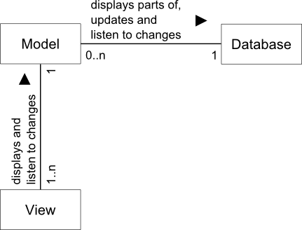
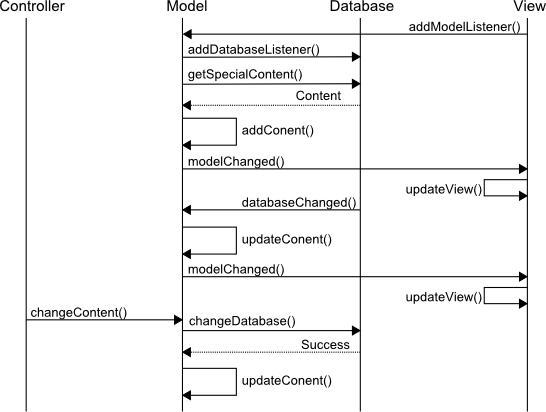

To reflect the current database content, a model is a database listener and synchronizes it's content with the database on database updates.
A model itself provides change methods. In case of changes, it does update the database and if successful, it updates the model content.
For a specific database content only one model instance exists.
The model can be displayed by multiple views. All model instances can
be retrieved through the model factory
({@link de.elmar_baumann.jpt.factory.ModelFactory}) method
getModel().

Class diagram: Associations between models, database and view

Sequence diagram: Interactions between Controller, Model, Database
and View
Some models do not interact with the database, e.g. a model with logfile formatter classes for controlling the output formatting of loggers.